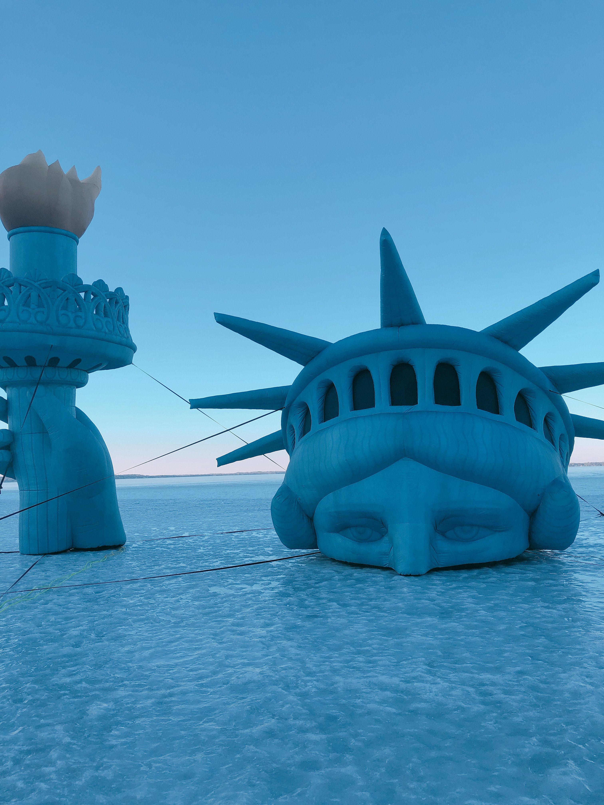
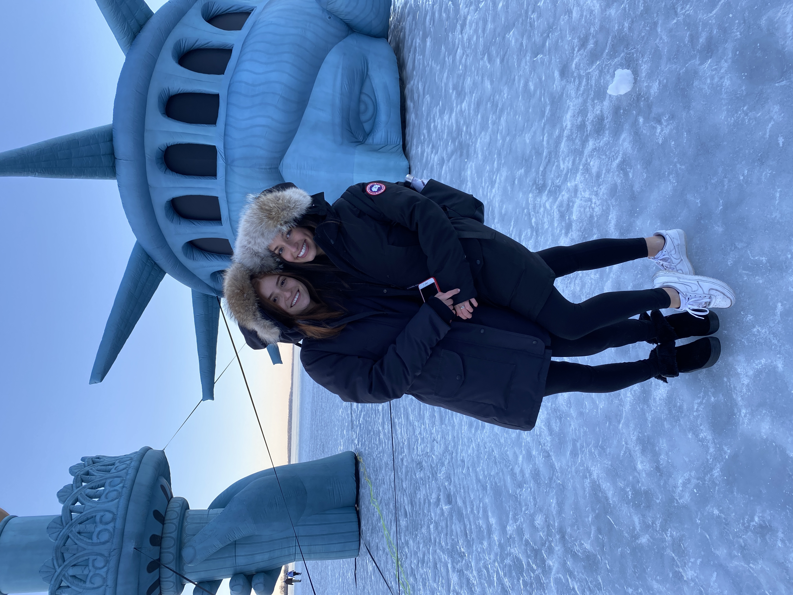

The zoo is a perfect place to go with your family and friends. It is a great place for people of all ages. There are so many different types of animals, reptiles, wild life, and aquatic creatures that you can find here! I even went here for my past birthday with my friends!
 Click here to go to Henry Vilas Zoo Website!
Click here to go to Henry Vilas Zoo Website!

Once the Cold Wisconsin weather finally begins to start and Lake Mendota freezes, once a year the New York Statue of Liberty is found on the lake. It is so fun to look at and take pictures of with your friends!
 